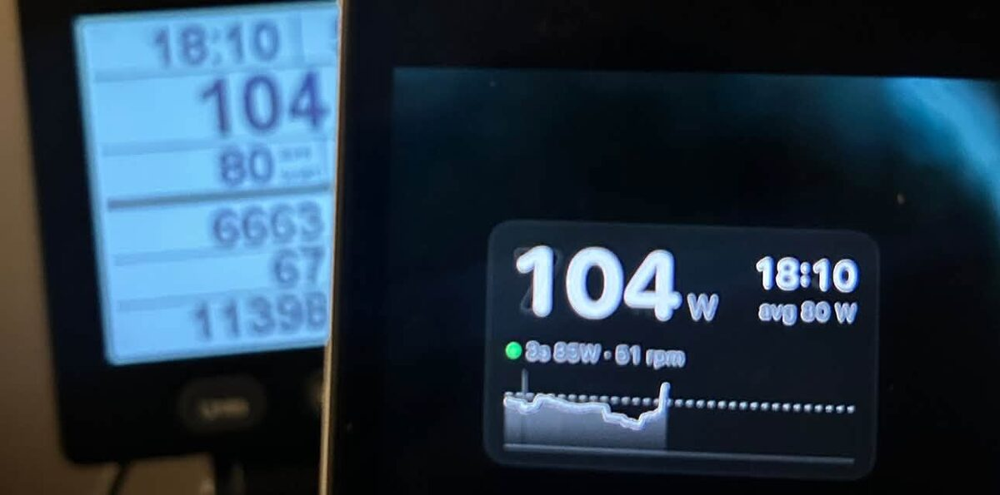
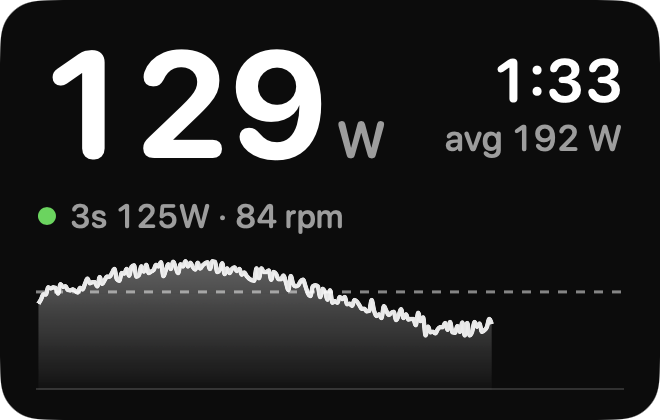

PowerView.
Live watts from your Concept2 BikeErg in a small window that floats over anything on your Mac, even a full-screen movie. It talks to the PM5 over Bluetooth. No dongle, no account, nothing to set up.

Install
Heads up: macOS will warn you the first time. This is a free hobby project, and we don't pay for an Apple developer account, so Apple hasn't checked (“notarized”) the app. macOS blocks apps like that until you say it's OK, once. The whole app is open source if you'd like to read it or build it yourself.
-
Open the download and drag PowerView into Applications.
Open
PowerView.dmgfrom your Downloads, then drag the PowerView icon onto the Applications folder next to it. - Open PowerView. macOS will block it. You'll see “Apple could not verify ‘PowerView’ is free of malware…”. Click Done. (Don't pick Move to Trash.)
-
Allow it in System Settings.
Open System Settings → Privacy & Security and scroll down to the Security section. Next to “PowerView was blocked to protect your Mac”, click Open Anyway, enter your password, then click Open Anyway again.
Prefer the Terminal?
This does the same thing in one step. Run it, then open PowerView normally:
xattr -dr com.apple.quarantine /Applications/PowerView.app - Allow Bluetooth. When PowerView asks to use Bluetooth, click Allow. That's how it reads the PM5.
Ride

- Wake the PM5 by pressing any button. PowerView finds it and connects on its own. You don't pair it in Bluetooth settings; macOS can't, and doesn't need to.
- Big number is your power. Under it: your 3-second average and cadence. On the right: the PM5's workout clock and average. The chart shows the last two minutes.
- Drag the window wherever you like. It stays on top of full-screen video and remembers its spot.
- Right-click the window for size, background, see-through opacity, refresh rate and Quit. PowerView has no Dock icon, so this menu is where you find it.
- It saves batteries. After a few minutes stopped, or once you end the workout, it disconnects so the PM5 can go to sleep. Click the window to reconnect.
Quit PowerView before you close your laptop. Sometimes it doesn't disconnect on its own after a workout ends. If it's still running, it can keep the PM5 connected and your workout active. Right-click the window and choose Quit.
Good to know
- Tested on the BikeErg. The RowErg and SkiErg might work too, but nobody has tried yet. Let us know.
- Found a bug or have an idea? Open an issue on GitHub.